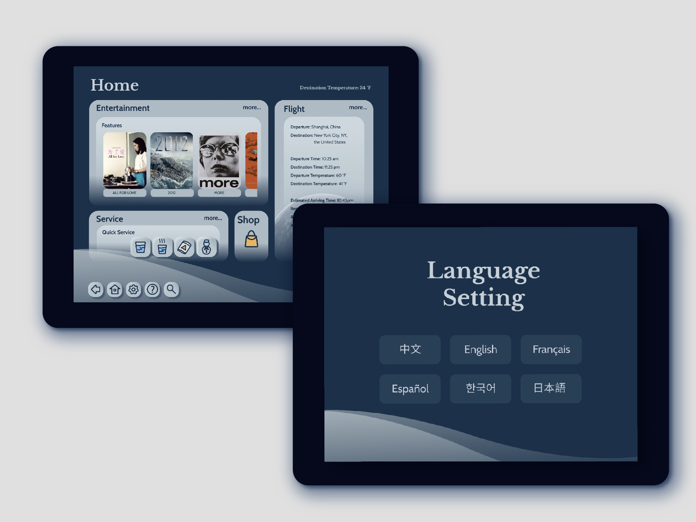
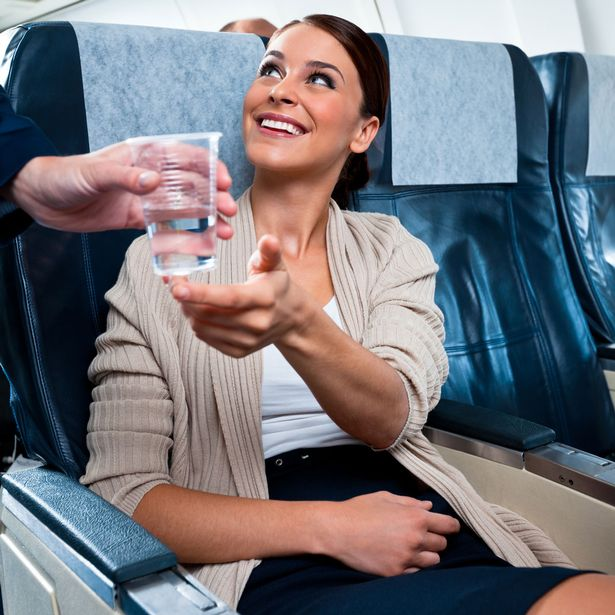
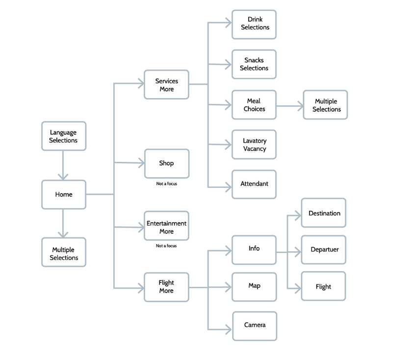
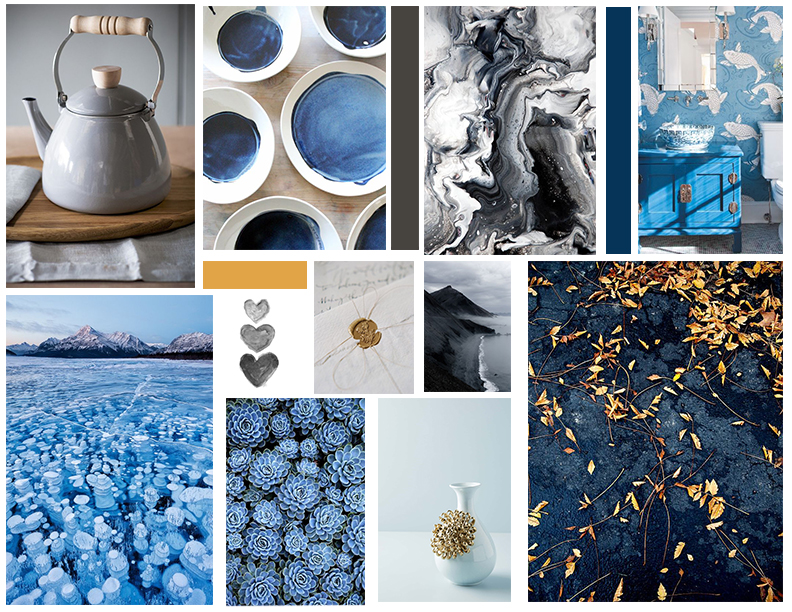
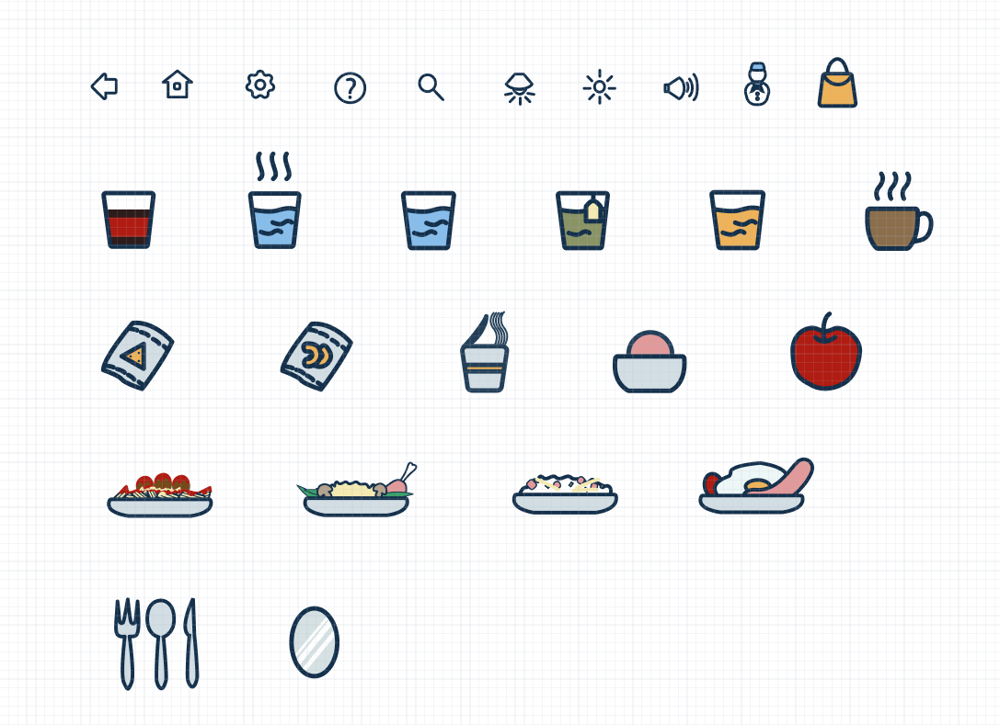
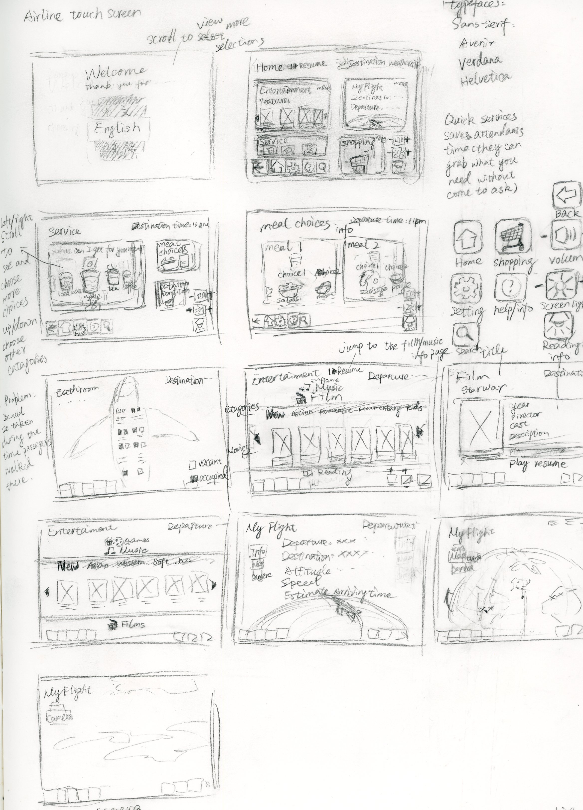

Airline Touch Application
Project Overview:
Designing a touch screen with different features for an airline. It serves the purpose of providing services to passengers during the flight (especially long-haul flights). I aimed to create a convenient service experience through a visually appealing application.
| Role | Duration | Client |
|---|---|---|
| Concept Design, UI/UX Design,
Visual Design |
5 Weeks | School Project |
Research/Observation
Audience: Long-haul flight passengers.
Problem 1: Lavatory line
I interviewed 5 people and did online research, and one of the most frustrating things in the airplane is going to the lavatory. Although some aircraft have lavatory signal, it is very hard to see in a distance, so people usually do not know whether a lavatory is occupied or not.
Other inconvenience caused by not knowing the
occupancy of the lavatory:
1. Lavatory line. 2. Middle-seat passengers get out from their seats but have to get back again because of the long waiting line. 3. Potential risk increased when the turbulence happens.

Problem 2: Ineffective Serving Flow
In general, the passengers press the button to let attendants come over and tell attendants their needs, then the attendants go back to bring things to passengers. It is ineffective for attendants to come over, go back, and come over again. During the turbulent, it is also dangerous.
Problem 3: Poorly Designed User Interface
Most airline touch application is poorly designed in terms of visual. It also lacks visual cues.
Sitemap
Solutions
1. Lavatory Occupancy Checking System - Allow passengers to check the lavatory occupancy situation in real-time to avoid unnecessary waiting time.
***Problem of the system: A line of waiting for bathrooms still happens. When one person comes out from the bathroom, the real-time lavatory vacancy status would update to that it is not occupied. Another person may go in after, and the passengers in the seats who see the vacancy status of the bathroom may have already stand up and missed the updated status has been taken by another person in a few seconds.
**Solution for this problem: Set a 5-second delay to update the vacant statues since the next person in the line would usually take about 5 seconds to get in and lock the door.
2. Quick Services System - Allow passengers to choose basic needs such as water, coffee, tea, and snacks, and attendants would only to go once in general situations. It also enables passengers to see the options in terms of the categories of drinks and snacks.
3. Visually Interest User Interface
Moodboard/Colors
Since it is for long-haul flights, a calm mood is the most suitable for comforting the passengers through the exhausting flying.
Keywords: Calm | Trustful | Meditative | Professional
The deep and light blues create a calm and peaceful feeling, while the yellow and orange give the visual cues to avoid boringness.

Icons
All the icons have round-edges for creating a sense of softness and comfortable visual looking.
Sketch
I sketched several to find out the visual arrangement and user flow. It is the chosen one.
